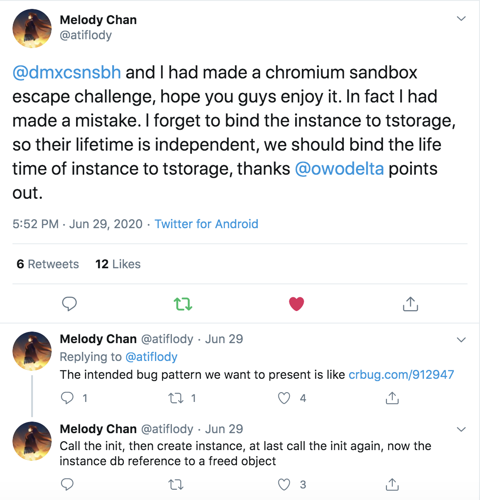
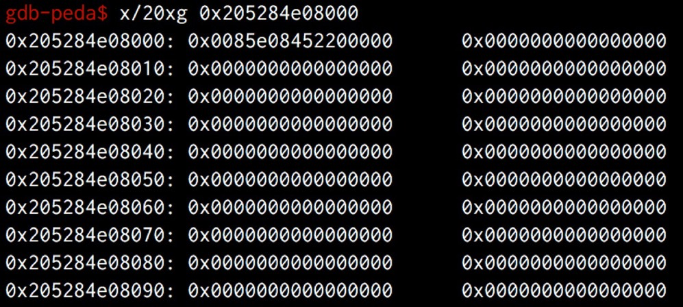
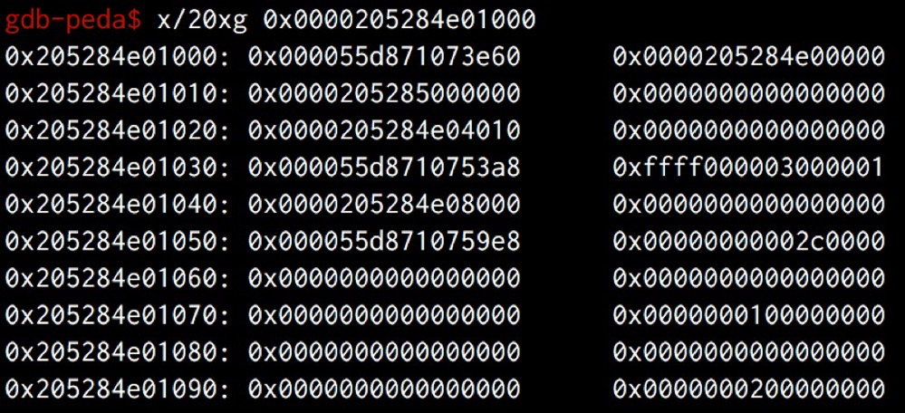
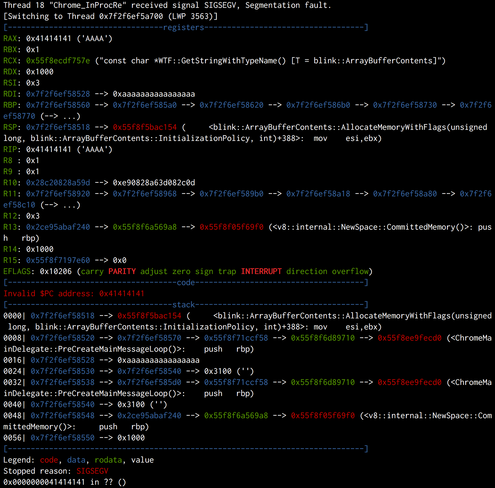
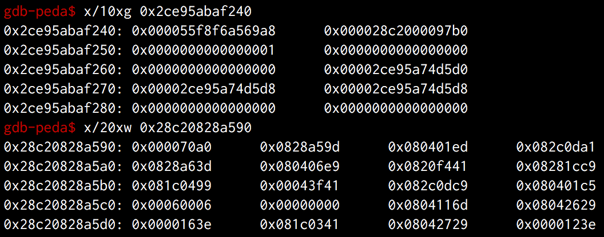

First of all, this is the first browser-related CTF challenge I ever made. I’m very glad to see that players are actively participating. In the end, 29 teams solved Chromium RCE, 7 teams solved Chromium SBX and 2 teams solved Chromium Fullchain, huge props to all those teams.
There are already several public write-ups and I have learned a lot from them. Nevertheless, I would like to provide a summary from my perspective and provide more details.
Part Ⅰ: Chromium RCE
Heap exploitation has been the most popular category in recent years’ CTFs. However, many players have already been tired of it, so we prepared something different - to do a glibc heap exploitation via JavaScript.
1 | diff --git a/src/builtins/typed-array-set.tq b/src/builtins/typed-array-set.tq |
The bug is trivial. We removed two DETACH checks in %TypedArray%.prototype.set, which gives us read/write primitive on a detached TypedArray. Besides, the ArrayBuffer Heap is managed by Glibc in d8 binary, so the situation is very similar to the traditional CTF heap challenge with four functions: Alloc, Delete, Show and Edit as follows:
1 | // Alloc |
According to the writeups I received, most players used fastbin attack to overwrite the malloc_hook_ with one_gadget, while some other players found a way to trigger malloc instead of calloc so the tcache attack works and makes it much easier.
To solve the challenge, players only need to know(or learn) some basic knowledge of v8, along with glibc heap tricks(also basic for a CTF player). So it was no surprise that it became the lowest point in Pwn category, but I hope everyone had fun and learned something from it.
Part Ⅱ: Chromium SBX
Before we start, I would like to apologize for our dumb mistake, which initialy made this challenge deemed infeasible. We have tweeted about it and thanks @owodelta again for pointing it out.

So the intended bug should be the double-init, which is also a famous bug pattern inside Chromium Sandbox. Let’s take a look at the patch after the fix:
1 | // content/browser/tstorage/tstorage_impl.cc |
1 | // third_party/blink/public/mojom/tstorage/tstorage.mojom |
(Therefore, as we expected, there is only one way to trigger the bug by calling the TStorageImpl::Init twice. In such case, reseting TStorage pointer is useless since it will also invalidate all TInstances when it is deleted.)
Bug analysis
There are two IPC calls of TStorage interface. The first IPC Init creates a new InnerDbImpl and binds the new database to inner_db_. The second IPC CreateInstance creates a TInstanceImpl which accepts the raw pointer of inner_db_ for the construction, and sends it back to the Renderer Process.
RawPtr is known to be very dangerous in C++ and developers need to be very careful about its lifetime. In this challenge, the owner of the database is TStorageImpl::inner_db_, which is a std::unique_ptr to an InnerDbImpl. If we make a second call to Init, the previous inner_db_ will be replaced by a new one, causing the previous one to be released immediately. As a result, the raw pointer of the previous inner_db_ in TInstanceImpl becomes a dangling pointer, which leads to UAF on InnerDbImpl.
Thus, the PoC would look like this:
1 | // Create TStorage |
TCMalloc
The next step is to reuse the memory of free’d inner_db_. According to the great research from markbrand, Blob looks perfect for our goal. However, some of you might have noticed, the situation may not be the same as you expected. The blob is hard to fill in the hole of inner_db_.
Actually this is my second point in this challenge - TCMalloc. Chromium uses tcmalloc for its heap management. In the challenge, vulnerable objects are all running in the UI Thread, while blobs are allocated/released in the IO Thread, so they are landed on the different threads and it could be very difficult to fill in the hole from a different ThreadCache.
Let’s take a look at the official introduction:
TCMalloc assigns each thread a thread-local cache. Small allocations are satisfied from the thread-local cache. Objects are moved from central data structures into a thread-local cache as needed, and periodic garbage collections are used to migrate memory back from a thread-local cache into the central data structures.
In summary, all mild operations on the heap are trapped in the thread. Each ThreadCache is unreachable from the other one. However, chunks in CentralThread could be moved to any ThreadCache, i.e. the chunks in the CentralThread could be accessed from any ThreadCache as needed.
There are at least two approaches to do a reliable exploit. The first one is to move the victim to the CentralCache, so that we can easily take it off; the other one is to find some usable allocations in the same thread. We will talk about the first one here, and leave the second to you, which could be helpful in the bonus challenge :)
According to the references of ReleaseToCentralCache, we have several approaches to achieve the migration. Let’s take a look at one path for example.
1 | inline ATTRIBUTE_ALWAYS_INLINE void ThreadCache::Deallocate(void* ptr, uint32 cl) { |
The above code snippet shows that, when the list is too long, some number of objects should be transferred to the central cache. So the solution is obvious. We only need to delete more databases after releasing the victim, and the linked list of the cache would be full. As a result, the free’d chunks will be moved to the CentralCache.
(By the way, after the discussion with Tim Becker, we found his writeup probably meets another condition[2]. After the huge destruction, the total size of the ThreadCache exceeds the max_size_, so it would do Scavenge and release the objects to the CentralCache.)
Infoleak
Now things are getting more general. Find a way to info leak then trigger the virtual call and do ROP. There are many materials from here, so I won’t go deep into it, however, I want to introduce a trick of base::queue.
base::queue is a four-pointer size structure which includes container, capacity, front and rear. If we leave everything zero, it will automatically init itself during the first push operation. It first allocates a container buffer for storing its elements, then stores the container pointer to itself. As a result, there is a heap pointer located at the blob and we can easily leak it out. (More details can be found in my talks)
1 | before init: |
In addition, I do recommend r3kapig’s writeup for further base::queue tricks.
Now we have got a heap address, we can then spray pages of heap which is first used by niklasb and ned. Or even better, we can use the queue itself to arrange the virtual table, since we are able to put any int64 on it.
Finally, we trigger the virtual call, ROP our way and get the flag.
Part Ⅲ: Chromium Fullchain
Finally we come to the finale.
The vulnerabilities are almost the same as the previous. It seems we only need a little effort to stick them up. But the truth is, as you see, things became much more complicated.
ArrayBuffer Neuter
The first obstacle is, I removed the native API %ArrayBufferDetach(Or we called it ArrayBufferNeuter some time ago) inside sandbox, so we should find a way to free the ArrayBuffer by ourselves.
There is a well-known trick in browser security. Javascript allows buffers to be transferred from a source thread to a Worker thread, and the transferred buffers are not accessible (“neutered”) in the source thread. In Chrome, it would also release the buffer of the ArrayBuffer.
After some research and experiments, we got the snippet of code:
1 | const ENABLE_NATIVE = 0 |
PartitionAlloc Bypass
Compared with the previous challenges, the most difficult part of fullchain is Heap Exploitation. In Chromium RCE, d8 uses ptmalloc for the heap management. However, when Chrome browser takes over the heap management, the memory allocator turns to PartitionAlloc. According to the official introduction, PartitionAlloc could be regarded as a kind of mitigation. It greatly hardens the security of the heap.
Around 2017, we(KeenLab) had several UAF bugs in ArrayBuffer Heap. I also tried to exploit them for Pwn2Own contest. I successfully pwned some of them on 32-bit arch(since the bug is used for Mobile Pwn2Own and browsers in the phone are 32-bit), but I have no idea about pwning it on 64-bit at that time. However, after the challenge, I find it is not unbreakable.
Well, let’s start our journey of PartitionAlloc. Like most heap allocator, there is also a freelist in PartitionAlloc. We can find it at the first pointer of the free’d chunk in Big-Endian. Let’s take a look in the debugger.
1 | let victim_ab = new ArrayBuffer(0x500); |

Note: 0x205284e08000 is a free’d chunk and the next free’d chunk is 0x205284e08500.
It is almost the same as tcache attack, except for the endianness. Since we have full control of the heap, this is not a problem. So just like tcache attack, we are able to allocate to any address we want.
Thus, together with the ArrayBufferDetach, we got the arb_alloc primitive.
1 | async function arb_alloc(addr, size, ret=true) { |
The next question is where to allocate. Since we only have heap address so far, let’s see what’s on it.
In fact, the heap address we leaked is in one of the SuperPages of PartitionAlloc. The layout of the SuperPage is as follows:
1 | | Guard page (4KB) | Metadata page (4KB) | Guard pages (8KB) | Slot span | Slot span | ... | Slot span | Guard page (4KB) | |
There are two writable pages in SuperPage. Slot span is just the DATA buffer, and the metadata page seems more interesting.

As you see, we can find Chrome address in metadata page! To leak the address, we can first allocate to the metadata page(e.g. 0x205284e01060), then create a new ArrayBuffer with an unused size, it will also create a new bucket and append some useful information to the metadata which we have already claimed.
After leaking Chrome address, we are able to allocate to global DATA segment of Chrome. Our goal is to turn on the MojoJS flag for the sandbox bypass, which requires arbitrary read/write according to markbrand’s exploit. My first thought is to leak the address of v8 heap, so that we can take control of the JS objects and do AAR/AAW as usual. However, our arb_alloc primitive has a weakness, that is it is more like calloc rather than malloc, which means it will first clear everything in the buffer before being taken out.
Luckily, after reading the source code of PartitionAlloc, i found that just like most memory allocators, there are also some allocator hooks located at global DATA segment such like allocation_override_hook_ and free_override_hook_. Overwriting these hooks gives us the ability to control $rip register and even do ROP with a stack pivot. True, it is enough to achieve code execution in Renderer Process, but it is not good enough for the sandbox escape, because we must guarantee the context of the process stay valid. So the best way is still to find the heap address of v8.
Anyway, let’s see if there is anything useful when it crashes.

If you are familiar with v8, you probably have realized that $r10 points to a v8 object. However, actually $r13 is better for us in our case. This is because we can find the address of v8 heap in $r13, but not in $r10.

Remember that we are in the hook of an allocation, so the return of the function is also the allocated buffer which will be sent back to Javascript. In other words, if we can find a gadget to set $r13 to the return value and ensure the context is not destroyed, we will get an ArrayBuffer whose data_ptr points to $r13.
The solution is shown in the diagram. We first move $r13 to $rax, then pop the stack to frame #6 directly.
1 | #0 0x0000000041414141 in () ; any gadget |
Since the pattern of the gadget is very common in the binary, we can easily find one at offset 0x6f81e30 in our challenge. More importantly, we skip the bzero operation in original allocation function, so we can take everything out from the heap and leak the address of v8 heap finally.
If you are following v8, you probably know that Pointer Compression has landed since version 8.0. With pointer compression, the offset of the objects in Old Space is fixed, plus we have already leaked the base address, we can easily corrupt the objects in Javascript via arb_alloc and finally turns to addrof, read and write primitive.
After turning on the MojoJS flag by AAR/AAW, the last step is to refresh the webpage to enable the feature. However, since the JS context is going to be recreated, all objects are marked as dead and their memory must be reclaimed. Further, it is difficult to avoid segmentation fault when the Garbage Collection tries to reclaim the corrupted ArrayBuffer objects and processes with the freelist.
This is one of the biggest difficulties in the challenge, but since we already have the ability to arbitrary R/W, we can patch the related functions to prevent the crash. In addtion, there is another simple way, that is, to overwrite free_hook_ with an empty function, so the free operation does not actually take effect. It perfectly avoid crash during the Garbage Collection since nothing actually happens.
Moreover, after reading ohjin’s exploit, I learned there is another flag blink::RuntimeEnabledFeatures::is_mojo_js_enabled_ located at the global data segment, which could be used to turn the MojoJS on as well. This makes things much easier. We only need to use arb_alloc to overwrite is_mojo_js_enabled_ flag and free_hook_, then the door to the next stage opens.
In summary, with no need for AAR/AAW, the steps of PartionAlloc attack could be:
- leak the heap address
- allocate to Metadata page and leak the chrome address
- allocate to
free_hookthen overwrite it with an empty_function(\xc3shellcode) - allocate to
is_mojo_js_enabled_then overwrite it with1 - window.location.reload()
After the refresh, everything is exactly the same as Part Ⅱ. Cheers!
By the way, after the game I learned from @owodelta there was a wild exploit of PartitionAlloc last month, which seems really cool! And this approach is used by @owodelta in his writeup of fullchain, MUST SEE!!!
Part Ⅳ: Chromium Fullchain++
As I mentioned above, I prepared a bonus challenge. Notice that I left some message in the patch.
1 | +// NOTE: On Windows platform, binary and library address of chrome main process is same |
As you see, the first challenge of the bonus is: how to exploit it without these two backdoors. If you manage to do it, try the second one: how about CFI enabled. CFI prevents from all indirect calls hijacking. The mitigation has already been deployed on Linux and ChromeOS official building and I believe this is the trend.
The solution of these two add-ons depends on the design of the challenge, so it might not be very general, but I’m pretty sure you could learn something from it more or less. When you solve the bonus challenge, please let me know and for the first 3 winners I will mail some gifts to you, might be some T-shirts or something like that :) Also, I will release my exploit after 3 solves.
Chromium Fullchain++
Try to solve the fullchain again with CFI enabled.
If you manage to execute./flag_printer, please send me the exploit and I’ll check it locally. My email address is in the attachment.Note: since no one else has checked the challenge, there might be some mistakes. Please contact me if you find anything wrong.
Reference
Public Writeups:
Great Research(from chrome-sbx-db)
- Theori Blog (2020) - Cleanly Escaping the Chrome Sandbox
- KeenLab (POC 2019) - Chrome Exploitation
- KeenLab (Blackhat USA 2019) - The Most Secure Browser? Pwning Chrome from 2016 to 2019
- Project Zero Blog (2019) - Virtually Unlimited Memory: Escaping the Chrome Sandbox
- Niklas Baumstark (OffensiveCon 2019) - IPC you outside the sandbox: One bug to rule the Chrome broker
- Ned Williamson (POC 2018) - Exploiting Chrome IPC
Credit
- @Melody Chan
- @owodelta
- @Tim Becker
- @ohjin, jinmo and @vngkv123
- @h0twinter